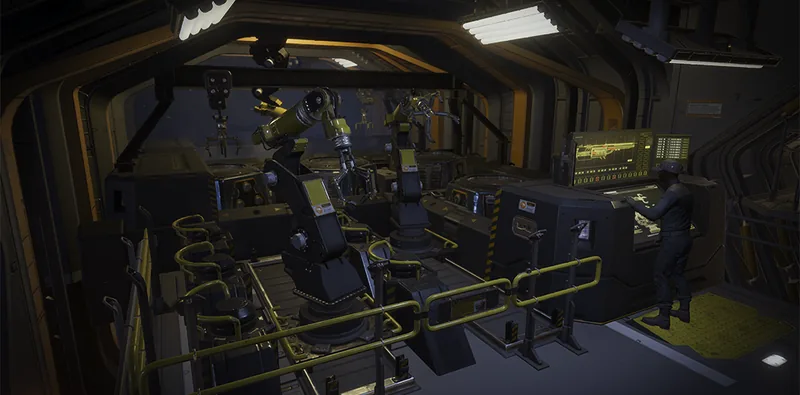

爆炸吸收

“Reinforces 哨戒炮 使用发泡聚苯乙烯块（花生形种类），可吸收热能和爆炸能量。
— 舰船管理终端
爆炸吸收 是4级 舰船模块 升级 for the Robotics Workshop.
升级效果
哨戒炮 take 50% 受到的爆炸伤害更少。
要求
- 优质润滑剂
 150 Common Sample
150 Common Sample 150 Rare Sample
150 Rare Sample 20 Super Sample
20 Super Sample 25,000 申购点 Slips
25,000 申购点 Slips
受影响的战略配备
变更历史
补丁
描述
1.000.300
2024-04-29
Fixes
- 修复了爆炸吸收舰船模块，使其正确提高哨兵对爆炸的抵抗强度。
1.000.202
2024-04-11
(Mid-补丁)
已加入游戏。